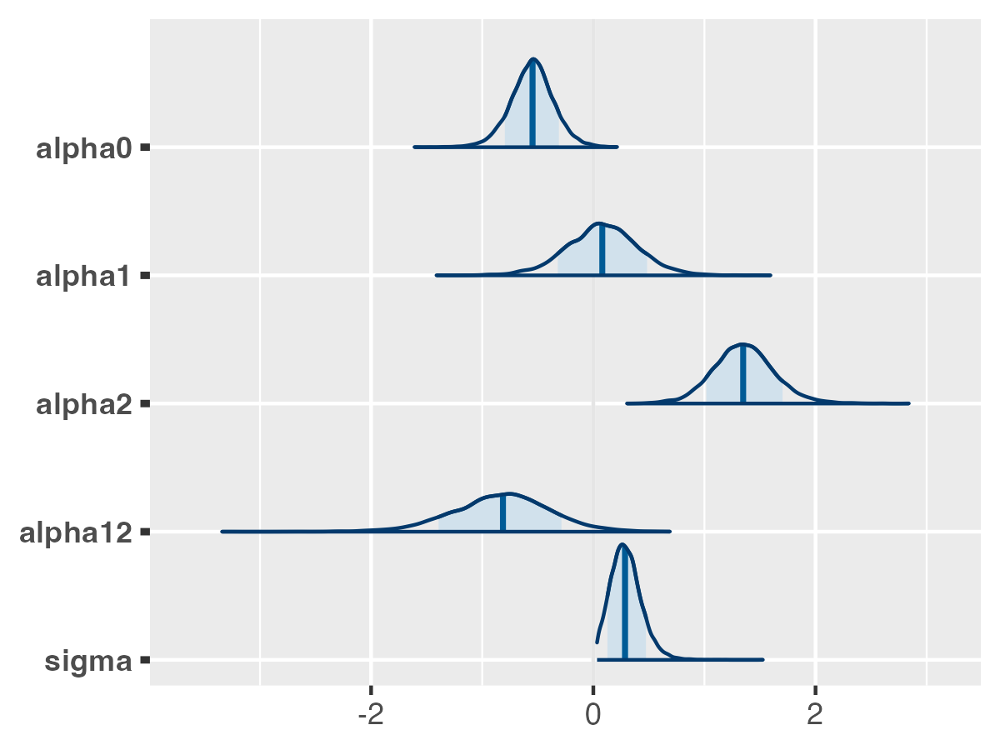
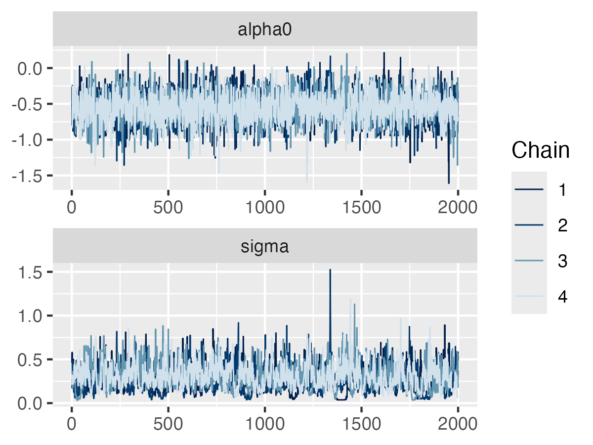

Getting Started with rjuliabugs: A Step-by-Step Logistic Regression Example with Random Effects
rjuliabugs.RmdThis document provides a complete walkthrough for fitting a simple
logistic regression model with random effects using the
rjuliabugs package. Rather than focusing on deep
statistical analysis, the main goal of this guide is to demonstrate how
to use the functionality offered by rjuliabugs to fit BUGS
models from R by leveraging modern probabilistic programming tools
available in Julia.
In particular, rjuliabugs allows users to fit models
using advanced samplers such as Hamiltonian Monte Carlo (HMC) and
automatic differentiation, as implemented in JuliaBUGS.
This integration brings the power and flexibility of modern Bayesian
computation into the R ecosystem with full compatibility of well know
packages as bayesplot, coda,
posterior which provide nice and neat visualizations and
diagnosticis for a full Bayesian workflow.
For more technical details about JuliaBUGS, please refer
to this link.
To learn more about probabilistic programming in Julia, we also
recommend the Turing.jl
project.
Prerequisites
This vignette assumes that rjuliabugs has already been
correctly installed and set up. The goal here is to provide a working
example under the assumption that your installation is functional.
For detailed installation instructions and troubleshooting information, please refer to the README. The installation guide includes the following sections:
Data Preparation
To demonstrate a first example, we will use the same dataset
presented in the official JuliaBUGS illustration. The case
concerns the proportion of seeds that germinated on each of 21 plates.
To work with this data, we need to create a named list in R that
contains all the variables required by the model.
data <- list(
r = c(10, 23, 23, 26, 17, 5, 53, 55, 32, 46, 10, 8, 10, 8, 23, 0, 3, 22, 15, 32, 3),
n = c(39, 62, 81, 51, 39, 6, 74, 72, 51, 79, 13, 16, 30, 28, 45, 4, 12, 41, 30, 51, 7),
x1 = c(0, 0, 0, 0, 0, 0, 0, 0, 0, 0, 0, 1, 1, 1, 1, 1, 1, 1, 1, 1, 1),
x2 = c(0, 0, 0, 0, 0, 1, 1, 1, 1, 1, 1, 0, 0, 0, 0, 0, 1, 1, 1, 1, 1),
N = 21
)Users already familiar with fitting models using JAGS or
Stan will recognize the structure of passing a named list
as the data input for the model. Here, we follow the same
convention.
One important disclaimer concerns the definition and use of numeric
values, particularly integers. When specifying an integer in the data
list, make sure it is not written with a decimal point. For example, if
a variable like N (e.g., the total number of plates) is
defined as 21.0 instead of 21,
JuliaCall will automatically convert it as a
Float, which may lead to an error if the model expects an
Integer. Always use strict integer values when required by
the model.
Inspecting closely each element we have r[i] as the
number of germinated seeds and n[i] as the total number of
seeds on the
-th
plate. Let
be the probability of germination on the
-th
plate. Then, the model is defined by:
where and are the seed type and root extract of the -th plate.
BUGS model
Once we have our data prepared, we can define the model using the
original BUGS syntax. In rjuliabugs, we write the model as
a string in R, following the same structure used in other R packages
that interface with BUGS-like tools:
model_def <- "
model {
for (i in 1:N) {
r[i] ~ dbin(p[i], n[i])
b[i] ~ dnorm(0.0, tau)
logit(p[i]) <- alpha0 + alpha1 * x1[i] + alpha2 * x2[i] +
alpha12 * x1[i] * x2[i] + b[i]
}
alpha0 ~ dnorm(0.0, 1.0E-6)
alpha1 ~ dnorm(0.0, 1.0E-6)
alpha2 ~ dnorm(0.0, 1.0E-6)
alpha12 ~ dnorm(0.0, 1.0E-6)
tau ~ dgamma(0.001, 0.001)
sigma <- 1 / sqrt(tau)
}
"Users familiar with R packages like R2jags,
rjags, or R2WinBUGS will recognize this
approach: the model is defined as a string using the BUGS modeling
language. For users coming from Stan (e.g., via rstan or
cmdstanr), the idea is similar: the model is written as a
probabilistic program inside a string object, then compiled and executed
by the backend.
This syntactic similarity is not accidental. It is a design choice of
rjuliabugs, which aims to allow users to reuse models
originally written for JAGS or WinBUGS, while
taking advantage of modern features available in Julia—such as
Hamiltonian Monte Carlo and automatic differentiation—via
JuliaBUGS.
We also remind users that they should be familiar with the
BUGS syntax, as syntax-related mistakes will lead to errors
during model compilation. For additional guidance, see the Miscellaneous
Notes on BUGS from the JuliaBUGS documentation, as well as the BUGS
Developer Manual.
For example, writing 1.0E-6.0 instead of
1.0E-6 is a syntax error in BUGS, even though the numerical
meaning is equivalent. These types of issues can be subtle but will
cause the model to fail during parsing, so attention to detail when
writing BUGS code is important.
Inference / Running the Sampler
Once the data is defined and the model is set up, we can run the
sampler to perform inference. The setup for the HMC sampler uses
Not-U-Turn Sampler (NUTS) with the target acceptance probability
for step size adaptation. This is done using the main function,
juliaBUGS. For example:
library(rjuliabugs)
posterior <- juliaBUGS(
data = data,
model_def = model_def,
params_to_save = c("alpha0", "alpha1", "alpha2", "alpha12", "sigma"),
n_iter = 2000,
n_warmup = 1000,
n_discard = 1000,
n_chain = 4,
use_parallel = FALSE,
n_thin = 1
)
#> Preparing JuliaBUGS setup... DONE!
#> Initialising AbstractMCMC.sample()... DONE!This will return the MCMC chains, and a brief inspection can be done
through summary function
# Generating the summary of the code
summary(posterior,get_summary = FALSE,get_quantiles = FALSE)
#> Summary of JuliaBUGS sampler:
#>
#> Iterations = 3000
#> Number of chains = 4
#> Number of posterior samples = 2000
#> Thinning parameter = 1
#> Samples per chain = 1001:3000
#>
#> Summary Statistics:
#>
#> parameters mean std mcse ess_bulk ess_tail rhat ess_per_sec
#> tau 50.159335 145.0744 15.456188 293 146 1.016 NA
#> alpha12 -0.828159 0.4434 0.008390 2755 4439 1.001 NA
#> alpha2 1.353300 0.2772 0.005020 3025 3852 1.002 NA
#> alpha1 0.080401 0.3152 0.006335 2468 4290 1.002 NA
#> alpha0 -0.548857 0.1944 0.003617 2885 3588 1.001 NA
#> b[1] -0.203235 0.2688 0.006624 1736 3583 1.003 NA
#> b[2] 0.004103 0.2212 0.002931 5805 4637 1.005 NA
#> b[3] -0.206592 0.2394 0.006092 1603 4283 1.004 NA
#> b[4] 0.278762 0.2608 0.007187 1299 4351 1.003 NA
#> b[5] 0.118124 0.2394 0.003791 4088 5359 1.002 NA
#> ...
#> 17 rows omittedIf we wish to obtain the summary statistics for each saved parameter,
we can set the argument get_summary = TRUE when calling
summary(). Additionally, to include the quantiles
associated with the posterior distributions, set
get_quantiles = TRUE. To inspect only the summary output in
the same format as displayed in JuliaBUGS, set
julia_summary_only = TRUE. This will return the native
Julia-style summary.
For further details, see the documentation by running
?summary.rjuliabugs.
Inspecting the Posterior Samples
Once sampling is done, the juliaBUGS function returns an
object of class rjuliabugs. This object contains:
params
Posterior samples, in the format specified byposterior_type. These are the parameters defined to be saved in the argumentparams_to_save. The format of this object depends on the prior definition of the argumentposterior_typewhen callingjuliaBUGS. The default is"array", which is compatible with most R libraries that work with posterior samples, and returns a 3D numeric array (iterations × chains × parameters). Other available types are"rvar","mcmc", and"draws". See?juliaBUGSfor more details.name
Character string identifying the Julia sampler object. As mentioned before,rjuliabugsrelies heavily onJuliaCallto integrate the R interface with Julia. While using the package, a Julia session runs in the background and generates theChainsobject containing all posterior samples, which can be accessed through thenameargument. This name can be defined when callingjuliaBUGSthrough thenameparameter and serves as the key to retrieve the fitted sampler. IfjuliaBUGSis called multiple times with the same name,rjuliabugsautomatically generates a new unique name to avoid overwriting. To delete a fitted model object from the Julia environment, calldelete_julia_obj()with the corresponding name. See?delete_julia_objfor more details.sampler
Sampler object returned byAbstractMCMC.sample. This is a Julia object of type"JuliaObject". For more details, see the documentation ofjulia_call()in theJuliaCallpackage.n_threads
Number of Julia threads detected. This is important to verify whether Julia properly recognized the available threads and if the sampler ran in parallel correctly. If you setparallel = TRUEwhen callingjuliaBUGSbut this value is one, the sampler actually ran sequentially.mcmc
List of MCMC configuration parameters. It includes all MCMC-related arguments passed when callingjuliaBUGS.control
Control options used in the sampler setup. For more details, see the documentation of?juliaBUGS.
Visualizing Posteriors
Once the posterior samples are obtained, further diagnostic and
visualization tools are easily accessible through well-known packages
such as bayesplot and posterior. For a full
walkthrough of visualizations and diagnostics, check the other vignette
(currently in progress).
For a quick illustration, let’s observe the density plot of the posteriors and their traceplots.
library(bayesplot)
# Plotting the posterior density for the saved parameters
mcmc_areas(
posterior$params,
pars = c("alpha0", "alpha1", "alpha2", "alpha12", "sigma"),
prob = 0.8
)
For the traceplots, we subset only the and the parameters:
library(bayesplot)
# Plotting traceplots for alpha0 and sigma
mcmc_trace(
x = posterior$params,
pars = c("alpha0", "sigma"),
n_warmup = 0,
facet_args = list(nrow = 2)
)
Similarly, diagnostics are also available from the posterior package:
Saving and loading the rjuliabugs model
Lastly, it is important to be able to save and load a
rjuliabugs model. To do it so we will use the
save_rjuliabugs() to save the posterior
object
save_rjuliabugs(rjuliabugs_model = posterior,
file = "rjuliabugs_model.rds",
chains_file = "rjuliabugs_chains.jls")and, to load we use load_rjuliabugs()
posterior <- load_rjuliabugs(file = "rjuliabugs_model.rds")